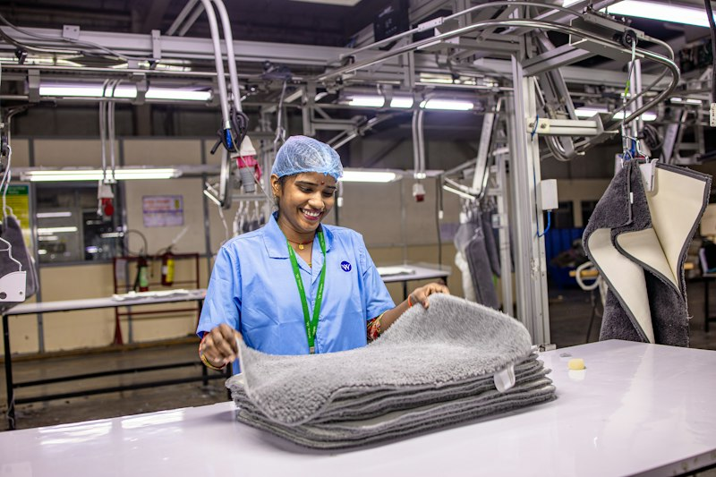
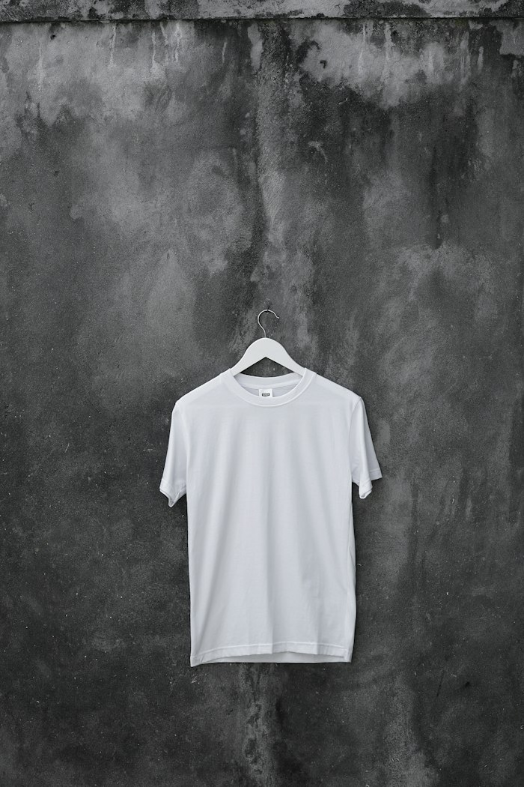

Social Audits
REQUEST AUDIT REPORT ➔
Worldwide Responsible Accredited Production Gold certification ensuring 100% fair living wages, no child labor, healthcare, and fire-safe facilities.
We maintain transparent, independently audited supply chains adhering to European EU CSDDD standards, US import safety rules, and ethical worker welfare frameworks.
Worldwide Responsible Accredited Production Gold certification ensuring 100% fair living wages, no child labor, healthcare, and fire-safe facilities.
Standard 100 Class 1 certification verifying zero harmful heavy metals, AZO dyes, or carcinogenic chemicals in direct skin contact textiles.
Biological effluent treatment recycling 98% of all process water back into dyeing machinery, eliminating river runoff completely.
Verified Higg FEM score of 88.4% benchmarking greenhouse gas abatement, energy efficiency, and chemical management protocol compliance.
Full chain-of-custody verification for post-consumer recycled polyester and pre-consumer recycled cotton spinning with transaction certificates.

Direct financial premiums paid to democratic worker-managed committees supporting healthcare, childcare clinics, and university scholarships.
From greige yarn arrival to export packing cartons, every process follows international ASTM and ISO standards.

100% of all knitted and woven fabric rolls pass through illuminated inspection frames. Defects such as barre, slubs, holes, and shade variation are mapped and flagged before cutting.

Strict statistical sampling verifying dimensional stability after 3 home washes, SPI (stitches per inch) conformity, barcode scan accuracy, and carton drop testing.
Qualified buyer sourcing teams can request SMETA 4-Pillar audit documents, chemical management test logs, or GOTS scope certificates.